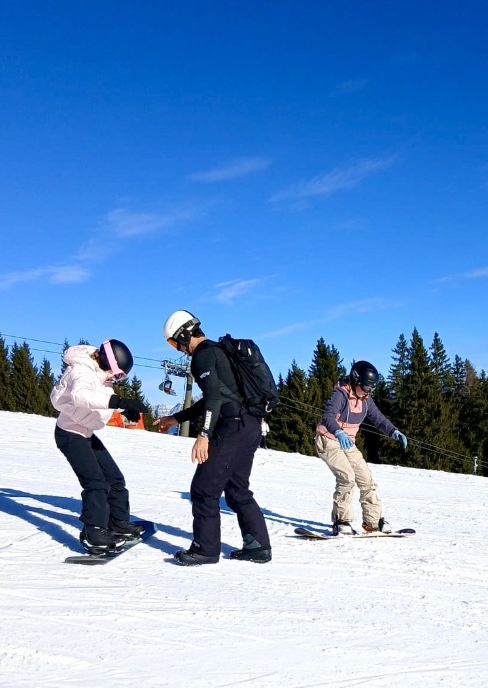
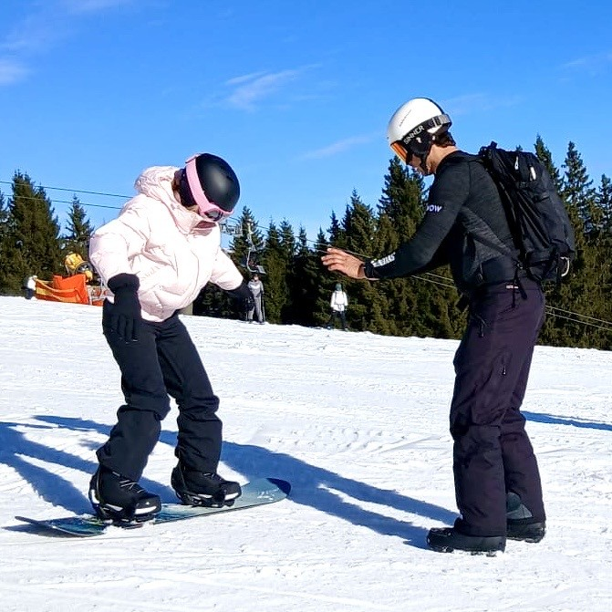
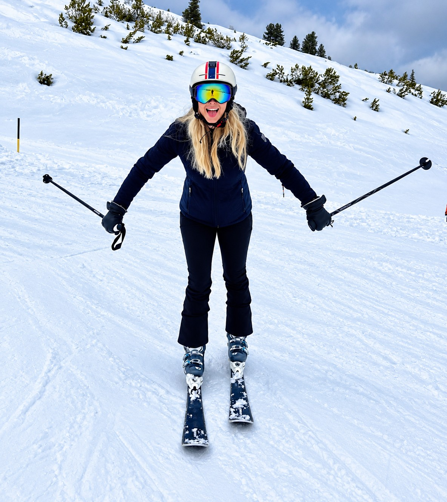

Ski, snowboard, bergen en sneeuw — een week die je nooit meer vergeet. Welkom in Zell am See & Kaprun, in het hart van de Oostenrijkse Alpen.
Zell am See / Kaprun — Oostenrijk
Dag 1 — 18:00 uur
Dag 5 — ± 10:00 uur
Kamers van 2, 3 of 4 personen
Luxe touringcars of dubbeldekkers
Ski- & snowboardlessen + vrij rijden
Docenten & WOW team
Schmittenhöhe & Kitzsteinhorn gletsjer
De WOW In the Snow-reis brengt je naar Zell am See en Kaprun, midden in het indrukwekkende hart van de Oostenrijkse Alpen.
We vertrekken ’s avonds met een luxe touringcar of dubbeldekker en rijden comfortabel door de nacht richting de bergen. Terwijl jij onderweg al kunt genieten van de sfeer met je vrienden, komen de besneeuwde toppen steeds dichterbij.
We verblijven in Villa Lukashansl, waar je slaapt in comfortabele kamers van 2, 3 of 4 personen. Een fijne eigen accommodatie waar we samen verblijven en waar iedere ochtend een lekker ontbijt voor je klaarstaat.
Natuurlijk is alles goed geregeld. De skipas en lessen zijn inbegrepen, zodat jij je nergens zorgen over hoeft te maken. Het enige wat jij hoeft te doen, is genieten van de sneeuw, de bergen en een onvergetelijke week met je vrienden.
Het skigebied van Zell am See en de Kitzsteinhorn-gletsjer in Kaprun bieden pistes voor ieder niveau. Of je nu voor het eerst op ski’s of een snowboard staat, of al jaren ervaring hebt: hier vind je altijd een uitdaging die bij jou past.
Sneeuw. Bergen. Vrienden. Sport. Fun.
Dit is niet zomaar een skireis.
Dit is jouw WOW In the Snow.

Voor beginners én gevorderden
Van je eerste glij-beweging tot hoge snelheid op de blauwe en rode pistes. Onze gecertificeerde skileraren begeleiden jou op jouw niveau. Elke dag les in kleine groepen.
Liever een board onder je voeten? Kies voor snowboardles en leer de basics of verbeter je techniek. Freeriden, carven of jumps — de piste is jouw speelplaats.
Nog nooit op de latten gestaan? Geen probleem. We starten rustig op de groene en blauwe pistes en bouwen stap voor stap op. Na een paar dagen sta je er verbaasd van hoe snel je leert.
Al ervaring? Dan duiken we de rode en zwarte pistes op. Met honderden kilometers aan pistes in Zell am See en de gletsjer in Kaprun is er altijd een nieuwe uitdaging.
Onze instructeurs staan dicht bij de groep. We geven persoonlijke aandacht, duidelijke instructies en passen het tempo aan op wat jij nodig hebt. Zo bouw je stap voor stap vertrouwen op.
Van de eerste bochtjes en het remmen tot steeds langere en mooiere afdalingen. Je zult merken dat je iedere dag beter wordt.
En dan komt misschien wel het mooiste moment. Gaat het écht lekker en ben je er klaar voor? Dan mag je, natuurlijk altijd in overleg met onze begeleiding, samen met je vrienden zelfstandig de grote piste op.
Hoe vet is dat? Zelf je afdaling kiezen. Samen met je vrienden naar beneden. En ondertussen weten je ouders dat wij in de buurt zijn en altijd een oogje in het zeil houden.
WOW Exclusive is er trouwens niet alleen voor kinderen die nog moeten leren skiën. Ook als je al goed kunt skiën en graag een keer zonder je ouders op wintersport wilt, ben je bij WOW aan het juiste adres.
Je krijgt de vrijheid om samen met je vrienden te genieten van de bergen, terwijl wij zorgen voor de begeleiding, structuur en veiligheid die daarbij horen.
Meer vrijheid. Meer vertrouwen. Meer avontuur.
Dat is WOW Exclusive.


Van de eerste voorzichtige bochtjes tot vol vertrouwen de piste af — bij WOW in the Snow draait het om plezier maken, vertrouwen opbouwen en samen genieten van de sneeuw.
Plezier maken is verplicht. Gezellig doen mag gewoon. En dan komt dat moment… ineens lukt die bocht, die afdaling of die sprong waar je eerst nog over twijfelde. Dat gevoel? Gewoon te gaaf.
Bij WOW in the Snow gaat het niet alleen om leren skiën of snowboarden. Het gaat om groeien, vertrouwen krijgen en samen herinneringen maken die je niet snel vergeet.
De avonden en vrije momenten zijn net zo leuk als de piste.
De gletsjer van Kaprun op ruim 3.000 meter hoogte — indrukwekkend uitzicht en sneeuwzekere pistes.
Uitzicht op meer dan 30 bergtoppen vanuit Zell am See — een van de mooiste panorama’s van de Alpen.
Na een dag op de piste gezellig bijkomen met je klas — eten, lachen en herinneringen ophalen.
Elke avond een WOW-activiteit — van gezelschapsspelletjes tot een quiz of filmavond met de groep.
Het bergmeerdorpje Zell am See heeft leuke winkels, restaurants en een unieke sfeer — ideaal voor een avondwandeling.
Foto’s op de top, sneeuwballen gooien, samen vallen en opstaan — dit zijn de momenten die je bijblijven.
Geen verborgen kosten: onderstaande prijzen zijn inclusief vervoer, verblijf, maaltijden, skipas, materiaal en verzekering.
Prijs per deelnemer
Incl. vervoer, alle maaltijden, 4-daagse skipas, materiaal en verzekering
Luxe touringcar vanaf Den Hoorn, Den Haag, Utrecht of Amsterdam.
Ga je niet met je klas mee, maar wil je toch die onvergetelijke sneeuwweek beleven? WOW in the Snow Exclusive is er speciaal voor individuele leerlingen — zelfde bestemming, dezelfde WOW-organisatie en begeleiding, gewoon los te boeken in de kerstvakantie.
Prijs per leerling
Incl. vervoer, alle maaltijden, 5-daagse skipas, materiaal en verzekering
18 t/m 24 december 2026 · Kaprun & Zell am See, Oostenrijk.
Kaprun & Zell am See — dezelfde Alpen-ervaring als WOW in the Snow, nu los te boeken.
Villa Lukashansl, kamers voor 2, 3 of 4 personen.
Ontbijt, lunch en diner inbegrepen tijdens de hele reis.
4-daagse skipas voor scholen, materiaalhuur of eigen materiaal, en instructie door gecertificeerde leraren.
Skiën, snowboarden, après-ski spelletjes en vrije tijd met de groep.
Ervaren mentoren, gecertificeerde instructeurs, veilige accommodatie en duidelijke afspraken.
Wintersport reisverzekering inbegrepen voor alle deelnemers.
Wintersport vraagt om de juiste spullen — check deze lijst goed:
Zo zorgen we voor een veilige en topweek
Ontdek wat WOW in the Snow voor jullie leerlingen kan betekenen.
Plan een kennismaking →